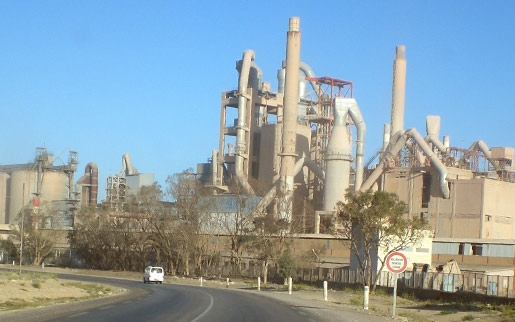

Présentation SCG
Crée en 1973,SCG est entrée en production en juin 1977 , SCG jouit donc d’un savoir-faire et d’une expérience unique dans la production de ciment et l’animation de points de vente des matériaux de construction. Elle fait partie du Groupe Portugais SECIL, qui opère dans le secteur des liants et les autres matériaux de construction, Certifiée ISO 9001:2015 et ISO 14001 : 2015
